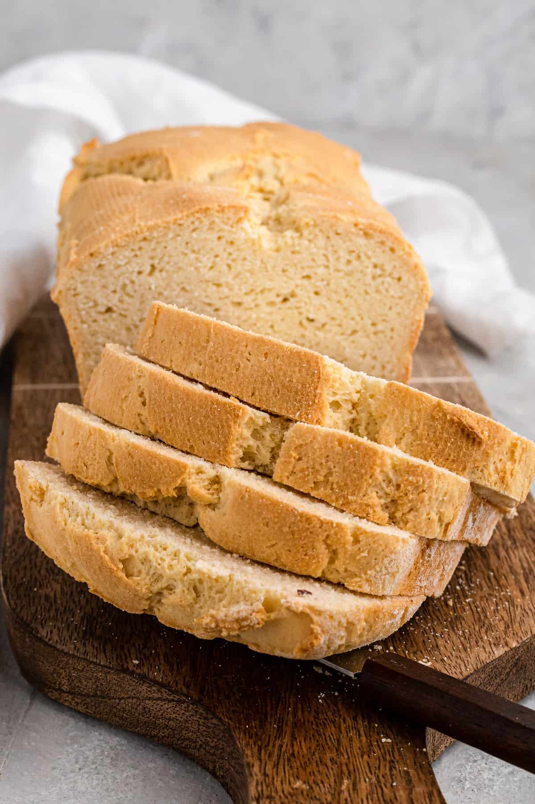

餐食营养数据
(mg)
(mg)
A(IU)
Fat(g)
Fat(g)
Fat(g)
Fat(g)
Free
Bread
Free
Cinnamon
Raisin
Bagels
Pumpkin
Smoothie
Butter
and Jelly
Smoothie
| Animals | |
|---|---|
| Hippopotamus | |
| Horse | Mare |
| Stallion | |
| Crocodile | |
| Chicken | Hen |
| Rooster | |
| 姓名 | 图片 | Calories | Fat(g) | Cholesterol (mg) |
Sodium (mg) |
Vitamin A(IU) |
|||||
|---|---|---|---|---|---|---|---|---|---|---|---|
| Saturated Fat(g) |
Trans Fat(g) |
Polyunsaturated Fat(g) |
Monounsaturated Fat(g) |
||||||||
| breakfast | breads | Gluten- Free Bread |
 | 134 | 1g | 1g | 1g | 3g | 20 | 162 | 30 |
| Gluten Free Cinnamon Raisin Bagels |
390 | 1g | 92 | 914 | 130 | ||||||
| Drinks | Chocolate Pumpkin Smoothie |
297 | 3 | 1 | 2 | 10 | 324 | 22021 | |||
| Peanut Butter and Jelly Smoothie |
460 | 5 | 5 | 8 | 10 | 209 | |||||
1.scope 可以取的值有哪些，它有什么作用？
scope可取row col rowgroup colgroup 分别代表表头对应的不同行列情况
2.thead>，tbody>，tfoot>有什么含义？应该在哪里使用它们？
表头、表体、表下注；顾名思义
3.表格标题用什么元素表示？
caption
4.th>， thead> ，tr>有什么区别？
th表头；thead表语义上的头部区域；tr代表一行
5.表格跨两行，跨两列应该怎么表示？
rowspan=2 colspan=2